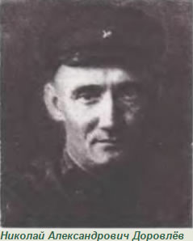
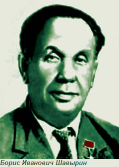
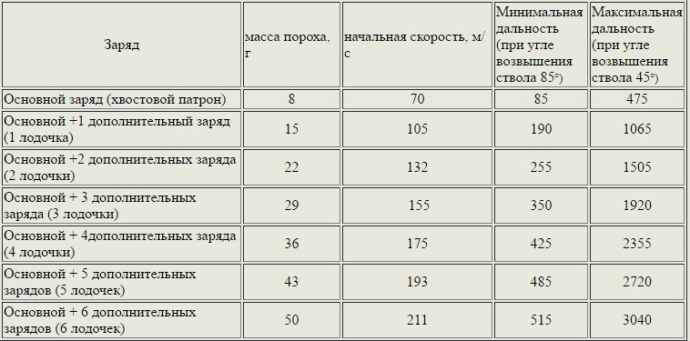
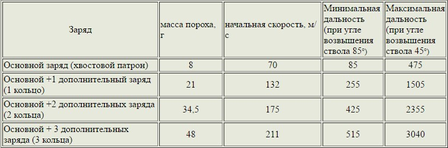
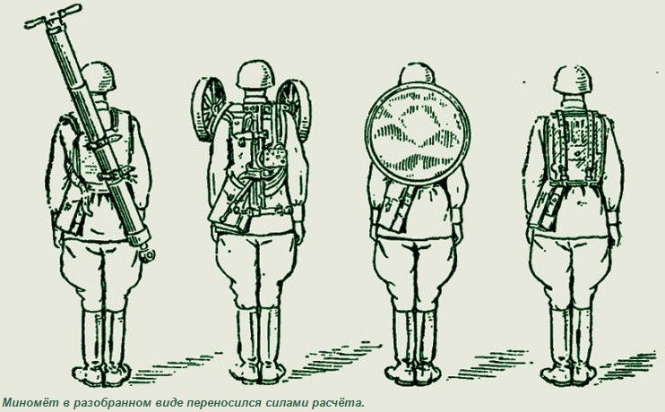
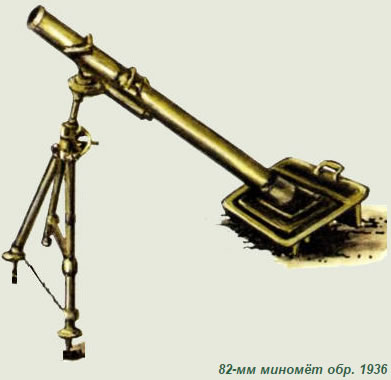
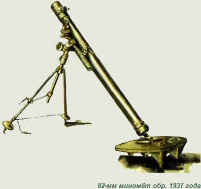
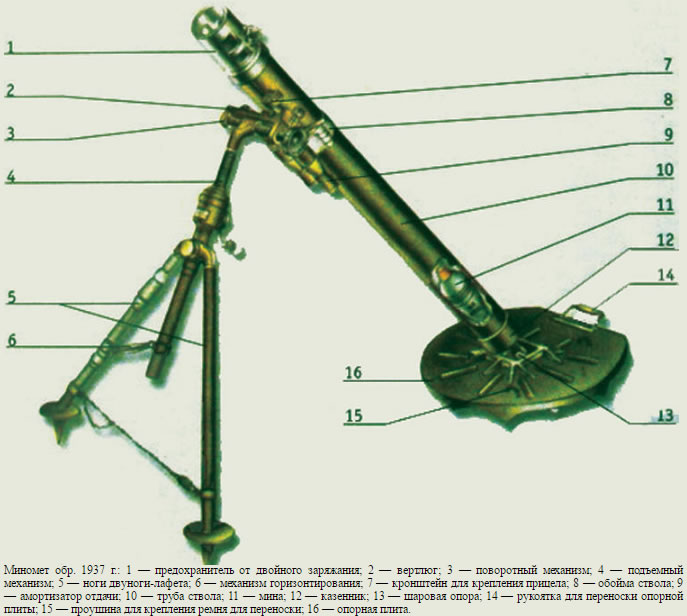
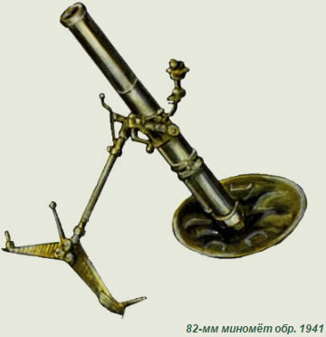

Миномет батальонный 82 мм
В начале 20-х годов ХХ столетия при Газодинамической лаборатории Артиллерийского научно-исследовательского института была создана конструкторско-испытательная группа Д, названную так по фамилии ее начальника, которого звали Николай Александрович Доровлёв.

Начальник группы Д был человеком необычной судьбы. Сын петербургского учителя, Николай Доровлёв в 1915 году, не закончив третьего семестра на механическом факультете Петроградского политехнического института, добровольно уходит вольноопределяющимся на фронт. Там он вскоре становится унтер-офицером, командиром орудия, затем его производят в офицеры, назначают командиром батареи. О храбрости и находчивости Доровлева в полку ходили легенды. Сразу же после гражданской войны Доровлева направляют учиться в Высшую артиллерийскую школу комсостава РККА и по окончании курса Артиллерийский комитет Главного артиллерийского управления назначает его начальником специализированной группы Д.
Первое время группа Доровлёва одновременно занималась разработками и мортир и минометов с надкалиберными минами, типа тех, какими стрелял миномёт Лихонина. Однако советско-китайская война 1929 года резко изменила направление работ группы Д.
В ходе этого конфликта нашими войсками у китайцев был захвачен миномёт Стокса-Брандта. Это был первый миномёт, созданный по схеме мнимого треугольника, ставшей впоследствии классической. Состоял он из гладкоствольной трубы с навинтным казёнником, двуноги-лафета, опорной плиты и прицела, причём опорная плита имеет три шаровых гнезда, что позволяет, переставляя в процессе стрельбы опору казённика, выравнивать плиту на грунте без её перемещения.
По мысли его изобретателя капитана английской службы сэра Вилфреда Стокса, гладкоствольный миномёт должен был выплёвывать неоперённые мины, которые, кувыркаясь в полёте, распыляли бы над местностью боевые отравляющие вещества.
Однако после первой мировой войны французская фирма Брандт разработала к миномёту Стокса оперенную мину. Такая мина уже не кувыркалась в полёте и не разбрасывала всякую химическую гадость, а будучи снаряжённой обычным тротилом, взрывалась при помощи головного взрывателя от удара о землю или, если очень повезёт, о каску, надетую на голову неприятельского солдата. Мина взрывалась у поверхности препятствия, не проникая в него, чем и обеспечивалось ее осколочное действие.
После того, как в 1927 году этот миномёт был принят на вооружение французской армии, он в том же году оказался в Шанхае вместе с прибывшими туда французскими интервентами.
Можно только предполагать, каким путём эти миномёты попали к фактическому правителю Маньчжурии 27-летнему маршалу Чжан Сюэляню, но вся его миномётная рота со всеми шестью миномётами в ноябре 1929 года попала в плен к советским танкистам.
Чудо враждебной техники спешно доставили в Москву и предъявили Доровлёву со словами упрёка, что тот до сих пор не создал ничего подобного.
Тем не менее, чтобы довести до ума собственный образец, основанный на трофейной новинке, Доровлёву понадобилось ещё четыре года, и лишь в 1934 году образец был представлен на испытания. Ещё год миномёт испытывался и в 1936 году, наконец, не без сопротивления некоторой части военных, был принят на вооружение Красной Армии. Дело в том, что к этому времени параллельно с миномётом была разработана и 76-милиметровая батальонная пушка-мортира Ф-23. Это нарезное орудие с длиной ствола 8,2 калибра стреляло стандартными снарядами от трёхдюймовки, выбрасывая их со 180-метровой скоростью на двухкилометровое расстояние. Однако на 34-м выстреле у Ф-23 вышли из строя противооткатные устройства и подъемный механизм, и предпочтение было отдано более простому, лёгкому и надёжному миномёту.
Калибр советского миномёта был несколько больше, чем у иностранного прототипа – 82 мм против 81,4 мм. По идее Доровлёва, это давало возможность использовать нашим миномётчикам трофейные мины, но не позволяло бы использовать противнику захваченные у нас боеприпасы. Однако на деле получилось наоборот – немцы часто использовали захваченные у нас миномёты, которых мы в войну выпустили во о раз больше, чем немцы, применяя в них свои мины.
Кстати о минах. Они были двух типов – шестипёрая и десятипёрая. Внутри хвостовой трубки любой из них крепился 8-граммовый центральный заряд пороха. Для заряда хвостового патрона могли применяться следующие пороха: вискозный марки ВМ, нитроглицериновый пластинчатый марки НБПл 14-10 или нитроглицериновый спиральный марки НБсп 13-47. При снаряжении хвостового патрона порохом марки НБсп 13-47 под навеску пороха НБсп помещается дополнительный воспламенитель, прикрываемый нитропленкой.
А между перьями стабилизатора шестипёрой мины крепились дополнительные семиграммовые заряды, в зависимости от числа которых можно было изменять начальную скорость мины. У десятипёрой же мины дополнительные 13-граммовые кольцевые заряды крепились непосредственно к шейке хвостовика. Для этих зарядоа использовался порох марки ВМ или П-45.
При закидывании мины в ствол миномёта накалывался капсюль центрального заряда. Пороховые газы прорывали его картонную оболочку и через огнепередаточные отверстия трубки стабилизатора выходили в канал ствола, где воспламеняли и дополнительные заряды, если таковые были прикреплены. Стрелять можно было и одним центральным зарядом – в этом случае начальная скорость мины составляла 70 м/с, и она летела на дальность от 85 до 475 метров, в зависимости от угла подъёма ствола. Если к шестипёрой мине прикреплялся один заряд-лодочка, то начальная скорость мины увеличивалась до 105 м/с, а максимальная дальность – до 1065 метров. При самом же максимальном заряде начальная скорость составляла 211 м/с, и мина при 45-градусном наклоне ствола могла лететь на 3040-метровую дальность.
82-мм миномет обр. 1936 г. стал первым советским батальонным минометом и предназначался для подавления огневых точек, поражения живой силы, разрушения проволочных заграждений и уничтожения материальной части противника, расположенных за укрытиями и недоступных для настильного стрелкового и артиллерийского огня, а также расположенных открыто.
Таблицы стрельбы из 82-мм миномёта
а) для шестипёрой мины

б) для десятипёрой мины


Двунога-лафет служила для поддерживания ствола, придания ему требуемого угла возвышения и производства горизонтальной наводки. Поэтому на ней были помещены все механизмы наводки: подъемный, поворотный и механизм горизонтирования. Двунога-лафет соединялась со стволом при помощи обоймы. В момент выстрела силу отдачи воспринимала прямоугольная опорная плита мембранного типа, которая при выстреле вдавливается в грунт.
За счет осадки грунта ствол при выстреле имеет возможность немного перемещаться назад, увлекая двуногу. Для уменьшения силы удара (толчка), который при этом испытывает двунога-лафет и который разрушительно действует на прицельные приспособления и механизмы наводки, двунога соединена со стволом пружинным амортизатором, смягчающим удар на двуногу-лафет.
В качестве прицельных приспособлений на миномете использовался механический минометный прицел МПБ-82. Осколочные мины предназначены для поражения целей (преимущественно живой силы) осколками и действием 454-граммового разрывного заряда. В качестве заряда использовался шнейдерит или амматол. Дымовые мины использовались для ослепления (задымления) наблюдательных и командных пунктов и огневых точек противника, а также для пристрелки и целеуказания. Кроме осколочных и дымовых мин на вооружении Красной Армии имелись также 82-мм агитационные мины.
Боевую проверку 82-мм минометы обр. 1936 г. прошли в боях с японскими войсками у озера Хасан и на реке Халхин-Гол. В боях на реке Халхин-Гол было использовано 52 миномета, составлявших около 10% всей полевой артиллерии.
Однако основным типом миномёта стал 82-миллиметовый миномёт образца 1937 года конструкции Бориса Ивановича Шавырина. Этот вариант миномёта имел круглую опорную плиту вместо прямоугольной.


В результате дальнейшей модернизации появились также и минометы обр. 1941 и обр. 1943 гг. В конструкцию миномета обр. 1941 г. старая двунога-лафет была заменена новой с колесами (снимаемыми перед стрельбой), благодаря которым появилась возможность миномет не носить, а перекатывать; на внешней поверхности ствола появились два утолщения для фиксации положения хомута амортизатора отдачи; в казенник ствола был встроен эксцентриковый механизм, позволяющий при разряжании миномета (в случае осечки) поднимать мину над выступающим бойком ударника; для примерного выравнивания подъемного приспособления стал применяться фиксирующий механизм эксцентрикового типа, а для точного выравнивания прицела — выравнивающий механизм винтового типа. Изменилась также конструкция амортизатора отдачи: вместо двух пар пружин осталась одна, а опорная плита была оборудована двумя зацепами для крепления ног лафета при перекатывании миномета на колесах.

В миномете обр. 1943 г. был применен более легкий лафет новой конструкции с подрессоренными колесами, не снимаемыми при стрельбе; конструкция фиксирующего механизма стала проще; жесткость основной пружины амортизатора отдачи была увеличена, подвижный кронштейн для крепления прицела был заменен неподвижным, приваренным к вертлюгу. Усовершенствованные зацепы на опорной плите, предназначенные для крепления лафета, позволили облегчить процесс перевода миномета из походного положения в боевое и обратно.
К началу Великой Отечественной войны в Красной Армии насчитывалось 14 200 шт. 82-мм миномётов. После окончания войны 82-мм миномёты состояли на вооружении армий ряда социалистических государств, а кое-где, например, в КНР, выпускались и серийно. Ныне 82-мм миномётами располагают вооружённые силы Сирии.
В начале 1980-х годов миномёт был снят с вооружения Советской армии и заменен на новые облегчённые по весу миномёты обр. 1981 г. 2Б14 Поднос. Однако во время чеченской войны миномёты этого типа вновь достали со складов.